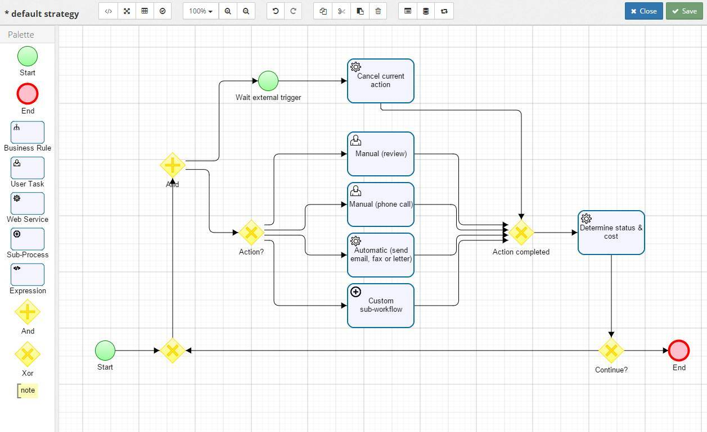

<div layout="row" layout-align="center center">
    <h2>strategy designer</h2>
    <span flex></span>
    <md-button ui-sref="strategies">cancel</md-button>
</div>

<md-content ng-show="canShowDesigner">
    
</md-content>
<div ng-hide="canShowDesigner">
    The designer is available only on devices greater than 960px wide.
</div>
